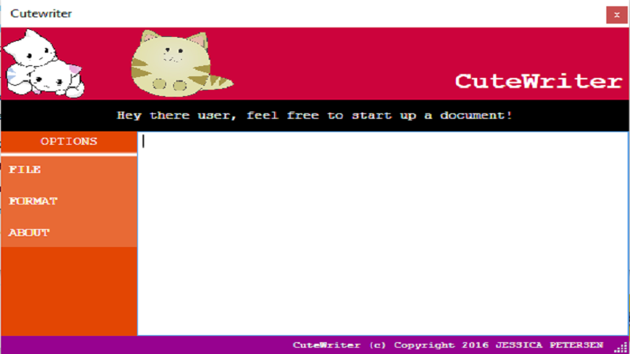

Portfolio Here's what I've been coding lately - feel free to have a browse!  CuteWriter CuteWriter is a notepad clone based around a "cute" theme. The project is complete and fully functional. This page is still under construction. Feel free to check out my source code here, compile it yourself and have a go!